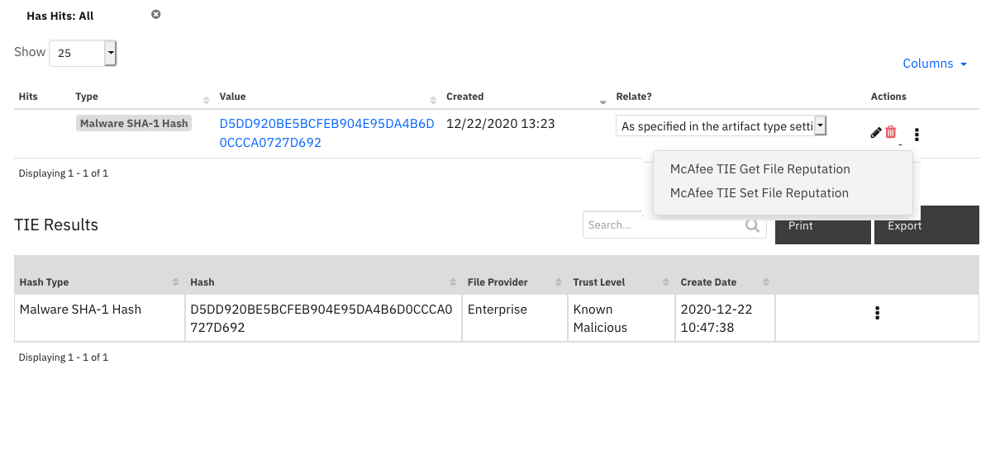

Microsoft Security Graph¶
Table of Contents¶
Release Notes¶
Version |
Date |
Notes |
|---|---|---|
1.2.1 |
07/2024 |
Converted to Python3 |
1.2.0 |
04/2022 |
|
1.1.0 |
09/2020 |
|
1.0.1 |
08/2020 |
UI version changes |
1.0.0 |
10/2018 |
Initial Release |
Overview¶
Sync alerts from MS Security Graph with IBM SOAR

The package contains a polling component and 3 functions.
The poller queries for alerts to be brought into the SOAR platform as new incidents,
while the functions allow SOAR users to search the graph, get alert details and update alerts.
Key Features¶
Alert Polling Integration that creates new incidents in the SOAR platform from Microsoft Graph Security API alerts.
Search function to query alerts across the tenant’s data using Microsoft Graph Security API.
Function to get details of specific Microsoft Security alerts.
Function to update details of specific Microsoft Security alerts.
Update Microsoft Security alerts as “Resolved” when the corresponding SOAR incident is closed.
Requirements¶
This app supports the IBM Security QRadar SOAR Platform and the IBM Security QRadar SOAR for IBM Cloud Pak for Security.
SOAR platform¶
The SOAR platform supports two app deployment mechanisms, Edge Gateway (also known as App Host) and integration server.
If deploying to a SOAR platform with an App Host, the requirements are:
SOAR platform >=
51.0.0.0.9340.The app is in a container-based format (available from the AppExchange as a
zipfile).
If deploying to a SOAR platform with an integration server, the requirements are:
SOAR platform >=
51.0.0.0.9340.The app is in the older integration format (available from the AppExchange as a
zipfile which contains atar.gzfile).Integration server is running
resilient_circuits>=40.0.0.If using an API key account, make sure the account provides the following minimum permissions:
Name
Permissions
Org Data
Read
Function
Read
The following SOAR platform guides provide additional information:
Edge Gateway Deployment Guide or App Host Deployment Guide: provides installation, configuration, and troubleshooting information, including proxy server settings.
Integration Server Guide: provides installation, configuration, and troubleshooting information, including proxy server settings.
System Administrator Guide: provides the procedure to install, configure and deploy apps.
The above guides are available on the IBM Documentation website at ibm.biz/soar-docs. On this web page, select your SOAR platform version. On the follow-on page, you can find the Edge Gateway Deployment Guide, App Host Deployment Guide, or Integration Server Guide by expanding Apps in the Table of Contents pane. The System Administrator Guide is available by expanding System Administrator.
Cloud Pak for Security¶
If you are deploying to IBM Cloud Pak for Security, the requirements are:
IBM Cloud Pak for Security >=
1.10.15.Cloud Pak is configured with an Edge Gateway.
The app is in a container-based format (available from the AppExchange as a
zipfile).
The following Cloud Pak guides provide additional information:
Edge Gateway Deployment Guide or App Host Deployment Guide: provides installation, configuration, and troubleshooting information, including proxy server settings. From the Table of Contents, select Case Management and Orchestration & Automation > Orchestration and Automation Apps.
System Administrator Guide: provides information to install, configure, and deploy apps. From the IBM Cloud Pak for Security IBM Documentation table of contents, select Case Management and Orchestration & Automation > System administrator.
These guides are available on the IBM Documentation website at ibm.biz/cp4s-docs. From this web page, select your IBM Cloud Pak for Security version. From the version-specific IBM Documentation page, select Case Management and Orchestration & Automation.
Proxy Server¶
The app does support a proxy server.
Python Environment¶
Python 3.9, 3.11, and 3.12 are officially supported. When deployed as an app, the app runs on Python 3.11. Additional package dependencies may exist for each of these packages:
resilient-lib>=40.0.0
resilient_circuits>=40.0.0
App Configuration¶
The following table provides the settings you need to configure the app. These settings are made in the app.config file. See the documentation discussed in the Requirements section for the procedure.
Config |
Required |
Example |
Description |
|---|---|---|---|
microsoft_graph_token_url |
Yes |
|
Microsoft Graph URL endpoint for acquring access token |
microsoft_graph_url |
Yes |
|
*Microsoft Graph base URL * |
tenant_id |
Yes |
|
Microsoft Azure Tenant ID |
client_id |
Yes |
|
Microsoft Azure Client ID (Application ID) |
client_secret |
Yes |
|
Microsoft Azure Client Secret |
msg_polling_intervals |
Yes |
|
Polling interval in seconds. Zero to turn off poller |
incident_template |
No |
`` |
Path to custom jinja template. If not set, use default template |
alert_query |
No |
|
String query to apply to the alert polling component |
alert_time_range_sec |
No |
|
Times in seconds to set the start dateTime values for the createdDateTime field when filtering alerts |
Installation¶
Install¶
To install or uninstall an App or Integration on the SOAR platform, see the documentation at ibm.biz/soar-docs.
To install or uninstall an App on IBM Cloud Pak for Security, see the documentation at ibm.biz/cp4s-docs and follow the instructions above to navigate to Orchestration and Automation.
App Configuration¶
The following table provides the settings you need to configure the app. These settings are made in the app.config file. See the documentation discussed in the Requirements section for the procedure.
Config |
Required |
Example |
Description |
|---|---|---|---|
alert_query |
Yes |
|
|
alert_time_range |
Yes |
`` |
|
client_id |
Yes |
|
|
client_secret |
Yes |
|
|
incident_template |
Yes |
`` |
|
microsoft_graph_token_url |
Yes |
|
|
microsoft_graph_url |
Yes |
|
|
msg_polling_interval |
Yes |
|
|
tenant_id |
Yes |
|
Function - Microsoft Security Graph Alert Search¶
Search across Microsoft Security Graph for alerts which match the corresponding search filters.

Inputs:
Name |
Type |
Required |
Example |
Tooltip |
|---|---|---|---|---|
|
|
No |
|
String to filter alert search results on |
Outputs:
NOTE: This example might be in JSON format, but
resultsis a Python Dictionary on the SOAR platform.
results = {
"content": {
"@odata.context": "https://graph.microsoft.com/v1.0/$metadata#security/alerts",
"value": []
},
"inputs": {
"microsoft_security_graph_alert_search_query": "filter=userStates/any(user:%20user/accountName%20eq%20\u0027example@example.microsoft.com\u0027)"
},
"run_time": 0.3749861717224121,
"success": true
}
Example Function Input Script:
from datetime import datetime
search = "filter="
conjunction = False
# Assuming rule and artifact are predefined objects with the necessary properties
if rule.properties.microsoft_security_graph_query_start_datetime:
start = datetime.fromisoformat(rule.properties.microsoft_security_graph_query_start_datetime)
start_ts = start.isoformat()
start_filter = "createdDateTime%20ge%20{}".format(start_ts)
search += start_filter
conjunction = True
if rule.properties.microsoft_security_graph_query_end_datetime:
end = datetime.fromisoformat(rule.properties.microsoft_security_graph_query_end_datetime)
end_ts = end.isoformat()
end_filter = "createdDateTime%20le%20{}".format(end_ts)
if conjunction:
search += "%20and%20"
search += end_filter
conjunction = True
if artifact.type == "User Account":
artifact_filter = "userStates/any(user:%20user/accountName%20eq%20'{}')".format(artifact.value)
if conjunction:
search += "%20and%20"
search += artifact_filter
conjunction = True
inputs.microsoft_security_graph_alert_search_query = search
Example Function Post Process Script:
alerts = results.content.value
note = "Microsoft Security Graph Alert Search<br>There are <b>{}</b> alerts based on the artifact of value <b>{}</b>.".format(str(len(alerts)), artifact.value)
if len(alerts):
note = note + "<br><b>Alert ids:</b>"
for alert in alerts:
note = note + "<br>- {}".format(alert.id)
incident.addNote(helper.createRichText(note))
Function - Microsoft Security Graph Get Alert Details¶
Get the details of an alert from the Microsoft Security Graph API.

Inputs:
Name |
Type |
Required |
Example |
Tooltip |
|---|---|---|---|---|
|
|
Yes |
|
ID of an alert. |
Outputs:
NOTE: This example might be in JSON format, but
resultsis a Python Dictionary on the SOAR platform.
results = {
"content": {
"@odata.context": "https://graph.microsoft.com/v1.0/$metadata#security/alerts/$entity",
"activityGroupName": null,
"alertDetections": [],
"assignedTo": null,
"azureSubscriptionId": null,
"azureTenantId": "50ad7d3e-b889-434d-802d-13b87c68047b",
"category": "Discovery",
"closedDateTime": null,
"cloudAppStates": [],
"comments": [],
"confidence": null,
"createdDateTime": "2021-11-18T00:25:41.2649763Z",
"description": "A known tool or technique was used to gather information on this device. Attackers might be trying to gather information about the target device or network for later attacks.",
"detectionIds": [],
"eventDateTime": "2021-11-18T00:21:12.910332Z",
"feedback": null,
"fileStates": [],
"historyStates": [],
"hostStates": [
{
"fqdn": "windowsvmos",
"isAzureAdJoined": false,
"isAzureAdRegistered": null,
"isHybridAzureDomainJoined": null,
"netBiosName": null,
"os": "Windows10",
"privateIpAddress": "1.0.0.0",
"publicIpAddress": "2.2.2.2",
"riskScore": "Medium"
}
],
"id": "da637727919412649530_-883158861",
"incidentIds": [],
"investigationSecurityStates": [],
"lastEventDateTime": null,
"lastModifiedDateTime": "2021-11-18T00:25:41.7333333Z",
"malwareStates": [],
"messageSecurityStates": [],
"networkConnections": [],
"processes": [],
"recommendedActions": [],
"registryKeyStates": [],
"riskScore": null,
"securityResources": [],
"severity": "low",
"sourceMaterials": [
"https://securitycenter.microsoft.com/alert/da637727919412649530_-883158861",
"https://security.microsoft.com/incidents/37"
],
"status": "newAlert",
"tags": [],
"title": "Suspicious Process Discovery",
"triggers": [],
"uriClickSecurityStates": [],
"userStates": [
{
"aadUserId": "ae973ab4-1b5e-48b2-bf2f-c3bf1b3634a2",
"accountName": "example",
"domainName": "WindowsVMOS",
"emailRole": "unknown",
"isVpn": null,
"logonDateTime": null,
"logonId": null,
"logonIp": null,
"logonLocation": null,
"logonType": null,
"onPremisesSecurityIdentifier": null,
"riskScore": null,
"userAccountType": null,
"userPrincipalName": "example@example.microsoft.com"
}
],
"vendorInformation": {
"provider": "Microsoft Defender ATP",
"providerVersion": null,
"subProvider": "MicrosoftDefenderATP",
"vendor": "Microsoft"
},
"vulnerabilityStates": []
},
"inputs": {
"microsoft_security_graph_alert_id": "da637727919412649530_-883158861"
},
"run_time": 0.7184658050537109,
"success": true
}
Example Function Input Script:
inputs.microsoft_security_graph_alert_id = incident.properties.microsoft_security_graph_alert_id
Example Function Post Process Script:
user_states = results.content.userStates
for state in user_states:
if state.logonIp:
incident.addArtifact("IP Address", state.logonIp, "")
if state.accountName:
incident.addArtifact("User Account", state.accountName, "")
if state.userPrincipalName:
incident.addArtifact("User Account", state.userPrincipalName, "")
# Put the results json into a workflow property so we can call the
# convert_json_to_rich_text script to print readable formatted json in an incident note.
json_note = {
"version": "1.0.",
"header": "Microsoft Security Graph Get Alert Details",
"json": results.content,
"sort": False
}
workflow.addProperty('convert_json_to_rich_text', json_note)
Function - Microsoft Security Graph Update Alert¶
Update an alert in the Microsoft Security Graph.

Inputs:
Name |
Type |
Required |
Example |
Tooltip |
|---|---|---|---|---|
|
|
Yes |
|
JSON string of data to update an alert with. |
|
|
Yes |
|
ID of an alert. |
Outputs:
NOTE: This example might be in JSON format, but
resultsis a Python Dictionary on the SOAR platform.
results = {
"content": {
"@odata.context": "https://graph.microsoft.com/v1.0/$metadata#security/alerts/$entity",
"CustomProperties": "[\"{\\\"Investigation Steps\\\":\\\"1. Review the IP addresses and determine if they should be communicating with the virtual machine\\\\r\\\\n2. Enforce the hardening rule recommended by Defender for Cloud which will allow access only to recommended IP addresses. You can edit the rule\u0027s properties and change the IP addresses to be allowed, or alternatively edit the Network Security Group\u0027s rules directly\\\",\\\"Destination Port\\\":\\\"514\\\",\\\"Protocol\\\":\\\"TCP\\\",\\\"Source IP(s) [Number of attempts]\\\":\\\"IP: 1.2.3.4 [42]\\\",\\\"resourceType\\\":\\\"Virtual Machine\\\",\\\"ReportingSystem\\\":\\\"Azure\\\"}\",\"\\\"PreAttack\\\"\"]",
"activityGroupName": null,
"alertDetections": [],
"assignedTo": "",
"azureSubscriptionId": "a4b7e24a-c7aa-4d84-8dae-89e99b336784",
"azureTenantId": "50ad7d3e-b889-434d-802d-13b87c68047b",
"category": "Network_TrafficFromUnrecommendedIP",
"closedDateTime": null,
"cloudAppStates": [],
"comments": [],
"confidence": null,
"createdDateTime": "2022-04-06T17:03:05.9705338Z",
"description": "Defender for Cloud detected inbound traffic from IP addresses that are recommended to be blocked. This typically occurs when this IP address doesn\u0027t communicate regularly with this resource.\r\nAlternatively, the IP address has been flagged as malicious by Microsoft\u0027s threat intelligence sources.",
"detectionIds": [],
"eventDateTime": "2022-04-05T01:00:00Z",
"feedback": null,
"fileStates": [],
"historyStates": [],
"hostStates": [],
"id": "2517531803999999999_eb4f270a-9603-44e0-adb2-16c0e5842d7d",
"incidentIds": [],
"investigationSecurityStates": [],
"lastEventDateTime": null,
"lastModifiedDateTime": "2022-04-07T12:26:36.5586762Z",
"malwareStates": [],
"messageSecurityStates": [],
"networkConnections": [
{
"applicationName": null,
"destinationAddress": null,
"destinationDomain": null,
"destinationLocation": null,
"destinationPort": "514",
"destinationUrl": null,
"direction": null,
"domainRegisteredDateTime": null,
"localDnsName": null,
"natDestinationAddress": null,
"natDestinationPort": null,
"natSourceAddress": null,
"natSourcePort": null,
"protocol": "tcp",
"riskScore": null,
"sourceAddress": "12.34.56.78",
"sourceLocation": "Fort Worth, Texas, US",
"sourcePort": null,
"status": null,
"urlParameters": null
}
],
"processes": [],
"recommendedActions": [
"{\"kind\":\"openBlade\",\"displayValue\":\"Enforce rule\",\"extension\":\"Microsoft_Azure_Security_R3\",\"detailBlade\":\"AdaptiveNetworkControlsResourceBlade\",\"detailBladeInputs\":\"protectedResourceId=/subscriptions/a4b7e24a-c7aa-4d84-8dae-89e99b336784/resourcegroups/demoassets/providers/microsoft.compute/virtualmachines/logforwarder\"}"
],
"registryKeyStates": [],
"riskScore": null,
"securityResources": [
{
"resource": "/subscriptions/a4b7e24a-c7aa-4d84-8dae-89e99b336784/resourcegroups/demoassets/providers/microsoft.compute/virtualmachines/logforwarder",
"resourceType": "attacked"
}
],
"severity": "low",
"sourceMaterials": [
"https://portal.azure.com/#blade/Microsoft_Azure_Security_AzureDefenderForData/AlertBlade/alertId/2517531803999999999_eb4f270a-9603-44e0-adb2-16c0e5842d7d/subscriptionId/a4b7e24a-c7aa-4d84-8dae-89e99b336784/resourceGroup/demoassets/referencedFrom/alertDeepLink/location/centralus"
],
"status": "unknown",
"tags": [
"",
""
],
"title": "Traffic detected from IP addresses recommended for blocking",
"triggers": [],
"uriClickSecurityStates": [],
"userStates": [],
"vendorInformation": {
"provider": "ASC",
"providerVersion": null,
"subProvider": "AdaptiveNetworkHardenings",
"vendor": "Microsoft"
},
"vulnerabilityStates": []
},
"inputs": {
"microsoft_security_graph_alert_data": "{\n \"assignedTo\": \"\",\n \n \"comments\": [\u0027\u0027, \u0027\u0027],\n \"feedback\": \"\",\n \"status\": \"unknown\",\n \"tags\": [\u0027\u0027, \u0027\u0027],\n \"vendorInformation\":\n {\n \"provider\": \"ASC\",\n \"vendor\": \"Microsoft\"\n }\n }",
"microsoft_security_graph_alert_id": "2517531803999999999_eb4f270a-9603-44e0-adb2-16c0e5842d7d"
},
"run_time": 0.4577150344848633,
"success": true
}
Example Function Input Script:
from datetime import datetime
# Current time in ISO 8601 format
epoch_time = datetime.utcnow()
closedDateTime = epoch_time.isoformat() + "Z" # Adding 'Z' to indicate UTC time
provider = workflow.properties.msg_alert_details.content.vendorInformation.provider
vendor = workflow.properties.msg_alert_details.content.vendor
data = '''{{
"closedDateTime": "{0}",
"status": "{1}",
"vendorInformation":
{{
"provider": "{2}",
"vendor": "{3}"
}}
}}'''.format(closedDateTime, "resolved", provider, vendor)
inputs.microsoft_security_graph_alert_data = data
inputs.microsoft_security_graph_alert_id = incident.properties.microsoft_security_graph_alert_id
Example Function Post Process Script:
# Put the results json into a workflow property so we can call the
# convert_json_to_rich_text script to print readable formatted json in an incident note.
json_note = {"version": "1.0.",
"header": "Microsoft Security Graph Resolve Alert",
"json": results.content}
workflow.addProperty('convert_json_to_rich_text', json_note)
Script - Convert json to rich text¶
This script converts a json object into a hierarchical display of rich text and adds the rich text to an incident’s rich text (custom) field or an incident note. A workflow property is used to share the json to convert and identify parameters used on how to perform the conversion. Typically, a function will create workflow property and this script will run after that function to perform the conversion. Features: * Display the hierarchical nature of json, presenting the json keys as bold labels * Provide links to found URLs * Create either an incident note or add results to an incident (custom) rich text field.
Object: incident
Script Text:
# (c) Copyright IBM Corp. 2010, 2024. All Rights Reserved.
VERSION = 1.3
"""
This script converts a json object into a hierarchical display of rich text and adds the rich text to an incident's rich text (custom) field or an incident note.
A workflow property is used to define the json to convert and identify parameters used on how to perform the conversion.
Typically, a function will create workflow property and this script will run after that function to perform the conversion.
Features:
* Display the hierarchical nature of json, presenting the json keys as bold labels
* Provide links to found URLs
* Create either an incident note or add results to an incident (custom) rich text field.
In order to use this script, define a workflow property called: convert_json_to_rich_text, to define the json and parameters to use for the conversion.
Workflow properties can be added using a command similar to this:
workflow.addProperty('convert_json_to_rich_text', {
"version": 1.3,
"header": "Artifact scan results for: {}".format(artifact.value),
"padding": 10,
"separator": u"<br />",
"sort": True,
"json": results.content,
"json_omit_list": ["omit"],
"incident_field": None
})
Format of workflow.property.convert_json_to_rich_text:
{
"version": 1.3, [this is for future compatibility]
"header": str, [header line to add to converted json produced or None. Ex: Results from scanning artifact: xxx. The header may contain rich text tags]
"padding": 10, [padding for nested json elements, or defaults to 10]
"separator": u"<br />"|list such as ['<span>','</span>'], [html separator between json keys and lists or defaults to html break: '<br />'.
If a list, then the data is brackets by the pair specified]
"sort": True|False, [sort the json keys at each level when displayed]
"json": json, [required json to convert]
"json_omit_list": [list of json keys to exclude or None]
"incident_field": "<incident_field>" [indicates a builtin rich text incident field, such as 'description'
or a custom rich text field in the format: 'properties.<field>'. default: create an incident note]
}
For playbooks, use playbook.addProperty() with the same format as workflow.addProperty()
Playbooks can also use playbook.functions.results.convert_json_to_rich_text using the standard function output which contains the 'content' json element.
When using playbook.functions.results.convert_json_to_rich_text with standard function results, all the defaults for padding, separator, etc. are used.
"""
import re
# needed for python 3
try:
unicode("abc") # fails in py3
py2 = True
except:
unicode = str
py2 = False
rc = re.compile(r'http[s]?://(?:[a-zA-Z]|[0-9]|[$-_@.&+#\?]|[!*\(\),]|(?:%[0-9a-fA-F][0-9a-fA-F]))+')
class ConvertJson:
"""Class to hold the conversion parameters and perform the conversion"""
def __init__(self, omit_keys=[], padding=10, separator=u"<br />", sort_keys=False):
self.omit_keys = omit_keys
self.padding = padding
self.separator = separator
self.sort_keys = sort_keys
def format_link(self, item):
"""[summary]
Find embedded urls (http(s)) and add html anchor tags to display as links
Args:
item ([string])
Returns:
[str]: None|original text if no links|text with html links
"""
formatted_item = item
if py2:
num_type = bool(item and isinstance(item, (int, long, bool, float)))
else:
num_type = bool(item and isinstance(item, (int, bool, float)))
if item and not num_type:
list = rc.findall(item)
if list:
for link in list:
formatted_item = formatted_item.replace(link, u"<a target='blank' href='{0}'>{0}</a>".format(link))
return formatted_item
def expand_list(self, list_value, is_list=False):
"""[summary]
convert items to html, adding indents to nested dictionaries.
Args:
list_value ([dict|list]): json element
Returns:
[str]: html converted code
"""
if not isinstance(list_value, list):
return self.format_link(list_value)
elif not list_value:
return u"None<br>"
try:
items_list = [] # this will ensure list starts on second line of key label
for item in list_value:
if isinstance(item, dict):
result = self.convert_json_to_rich_text(item)
if is_list:
items_list.append(u"<li>{}</li>".format(result))
else:
items_list.append(result)
elif isinstance(item, list):
items_list.append(self.expand_list(item, is_list=True))
elif is_list:
items_list.append(u"<li>{}</li>".format(self.format_link(unicode(item))))
else:
items_list.append(self.format_link(unicode(item)))
expand_list_result = self.add_separator(self.separator if not is_list else u"",
items_list,
is_list=is_list)
if is_list:
return u"<ul>{}</ul>".format(expand_list_result)
else:
return u"<div style='padding:5px'>{}</div>".format(expand_list_result)
except Exception as err:
return str(err)
def convert_json_to_rich_text(self, sub_dict):
"""[summary]
Walk dictionary tree and convert to html for better display
Args:
sub_dict ([type]): [description]
Returns:
[type]: [description]
"""
notes = []
if sub_dict and isinstance(sub_dict, (list, dict)):
if isinstance(sub_dict, list):
expanded_list = self.expand_list(sub_dict, is_list=True)
notes.append(self.add_separator(self.separator, expanded_list))
else:
keys = sorted (sub_dict.keys()) if self.sort_keys else sub_dict.keys()
for key in keys:
if key not in self.omit_keys:
value = sub_dict[key]
is_list = isinstance(value, list)
item_list = [u"<strong>{0}</strong>: ".format(key)]
if isinstance(value, dict):
convert_result = self.convert_json_to_rich_text(value)
if convert_result:
item_list.append(u"<div style='padding:{}px'>{}</div>".format(self.padding, convert_result))
else:
item_list.append(u"None<br>")
else:
item_list.append(self.expand_list(value, is_list=is_list))
notes.append(self.add_separator(self.separator, u"".join(make_unicode(v) for v in item_list), is_list=is_list))
result_notes = u"".join(notes)
if isinstance(self.separator, list):
return result_notes
else:
return result_notes.replace(
u"</div>{0}".format(self.separator), u"</div>").replace(
u"{0}</div>".format(self.separator), u"</div>"
) # tighten up result
def add_separator(self, separator, items, is_list=False):
"""
apply the separator to the data
:param separator: None, str or list such as ['<span>', '</span>']
:param items: str or list to add separator
:return: text with separator applied
"""
_items = items
if not _items:
return "<br>"
if not isinstance(_items, list):
_items = [_items]
if isinstance(separator, list):
return u"".join([u"{}{}{}".format(separator[0], item, separator[1]) for item in _items])
return u"{}{}".format(separator.join(_items), separator if not is_list else u"")
def make_unicode(value):
if value is None:
return 'None'
return unicode(value)
def get_results(property_name):
if playbook and playbook.functions.results[property_name] is not None:
return playbook.functions.results[property_name]
elif playbook and playbook.properties[property_name] is not None:
return playbook.properties[property_name]
elif workflow and workflow.properties[property_name] is not None:
return workflow.properties[property_name]
return None
def get_properties(property_name):
"""
Logic to collect the json and parameters from a workflow property.
Args:
property_name: workflow property to reference
Returns:
padding, separator, header, json_omit_list, incident_field, json, sort_keys
"""
result_properties = get_results(property_name)
if not result_properties:
helper.fail("Playbook/workflow property not found: {}".format(property_name))
padding = int(result_properties.get("padding", 10))
separator = result_properties.get("separator", u"<br />")
if isinstance(separator, list) and len(separator) != 2:
helper.fail("list of separators should be specified as a pair such as ['<div>', '</div>']: {}".format(separator))
header = result_properties.get("header")
sort_keys = bool(result_properties.get("sort", False))
json_omit_list = result_properties.get("json_omit_list")
if not json_omit_list:
json_omit_list = []
incident_field = result_properties.get("incident_field")
# workflow formatted content is 'json'. Standard functions is 'content'
json = result_properties.get("json") if result_properties.get("json") else result_properties.get("content")
json_err = None
# is there an issue we need handle now?
if not json and \
result_properties.get("success") == False and result_properties.get("reason"):
json_err = result_properties.get("reason")
return padding, separator, header, json_omit_list, incident_field, json, json_err, sort_keys
## S T A R T
padding, separator, header, json_omit_list, incident_field, json, json_err, sort_keys = get_properties('convert_json_to_rich_text')
if json_err:
result = "Result error: {}".format(json_err)
else:
if header:
if isinstance(separator, list):
hdr = u"{0}{1}{2}".format(separator[0], header, separator[1])
else:
hdr = u"{0}{1}".format(header, separator)
else:
hdr = u""
convert = ConvertJson(omit_keys=json_omit_list, padding=padding, separator=separator, sort_keys=sort_keys)
converted_json = convert.convert_json_to_rich_text(json)
result = u"{}{}".format(hdr, converted_json if converted_json else "\nNone")
rich_text_note = helper.createRichText(result)
if incident_field:
incident[incident_field] = rich_text_note
else:
incident.addNote(rich_text_note)
Custom Fields¶
Label |
API Access Name |
Type |
Prefix |
Placeholder |
Tooltip |
|---|---|---|---|---|---|
Microsoft Security Graph Alert ID |
|
|
|
Field for Microsoft Security Graph Alert ID |
ID of an alert from Microsoft Security Graph |
Rules¶
Rule Name |
Object |
Workflow Triggered |
Condition |
|---|---|---|---|
Example: Microsoft Security Graph Alert Search |
artifact |
|
|
Example: Microsoft Security Graph Get Details |
incident |
|
|
Example: Microsoft Security Graph Resolve Alert |
incident |
|
|
Example: Microsoft Security Graph Update Alert |
incident |
|
|
Troubleshooting & Support¶
Refer to the documentation listed in the Requirements section for troubleshooting information.
For Support¶
This is an IBM supported app. Please search ibm.com/mysupport for assistance.